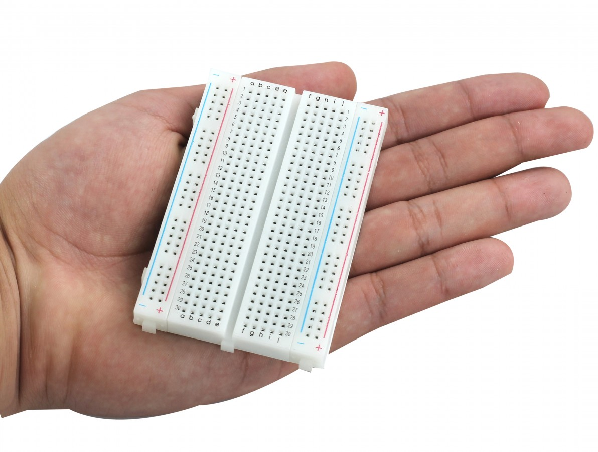
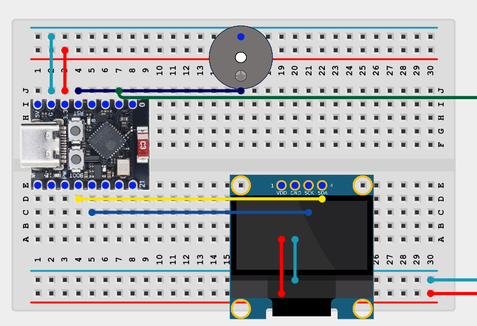

🌿 Meu progresso
Marque cada atividade depois de realizá-la. As marcações ficam salvas neste navegador.
0 de 5 atividades concluídas
🚀 Desafios avançados: opcionais
🌱 1. Instalando o ESP32-C3 na protoboard
A protoboard permite realizar montagens eletrônicas sem precisar soldar fios ou componentes.
Vamos utilizar uma protoboard de 400 pontos.

Como realizar a montagem?
- Desconecte o cabo USB-C do ESP32-C3.
- Observe o canal central da protoboard.
- Posicione o ESP32-C3 de modo que suas duas fileiras de pinos fiquem em lados opostos do canal central, se as dimensões permitirem.
- Não force os pinos durante o encaixe.
- Peça à monitora para conferir a montagem.
- Depois da conferência, conecte o cabo USB-C de dados.
Se a placa não tiver os pinos soldados ou não encaixar corretamente na protoboard, solicite ajuda à monitora.
Nunca force o encaixe.
🌱 2. Conhecendo os LEDs da placa
Alguns microcontroladores possuem LEDs integrados que permitem observar seu funcionamento.

| Tipo de LED | Função |
|---|---|
| LED de alimentação | Indica que a placa está recebendo energia elétrica. |
| LED programável | Pode ser controlado por um programa. |
Observe o LED azul do ESP32-C3.
Ele acende ao conectar o cabo USB-C?
Você consegue identificar outros LEDs na placa?
O LED azul pode ser apenas um indicador de alimentação.
Algumas versões do ESP32-C3 Super Mini possuem um LED programável conectado ao GPIO8. Outras versões utilizam LEDs endereçáveis ou não possuem LED programável.
🌱 3. Fazendo o LED piscar
Vamos escrever um programa que altera o estado de um pino digital do ESP32-C3.
Neste experimento utilizaremos o GPIO8.
O efeito luminoso será visível nas placas que possuem um LED convencional conectado a esse pino.
// GlowUP Plant — Experimento 3
// Objetivo: fazer o LED integrado piscar.
// Identifica o pino que desejamos controlar.
// Em algumas placas, o LED convencional
// está conectado ao GPIO8.
const int PINO_LED = 8;
// A função setup() executa uma única vez
// quando o microcontrolador é iniciado.
void setup() {
// Configura o GPIO8 como uma saída digital.
// Isso permite controlar seu nível elétrico.
pinMode(PINO_LED, OUTPUT);
}
// A função loop() executa continuamente.
void loop() {
// Envia nível lógico BAIXO ao GPIO8.
// Em LEDs ativos em LOW, isso acende o LED.
digitalWrite(PINO_LED, LOW);
// Aguarda 1000 milissegundos (1 segundo).
delay(1000);
// Envia nível lógico ALTO ao GPIO8.
// Em LEDs ativos em LOW, isso apaga o LED.
digitalWrite(PINO_LED, HIGH);
// Aguarda mais um segundo.
delay(1000);
// Ao terminar, loop() começa novamente.
}
Como testar?
- Abra o Arduino IDE.
- Crie um novo programa.
- Copie o código apresentado acima.
- Selecione a placa ESP32C3 Dev Module.
- Envie o programa ao ESP32-C3.
- Observe o comportamento do LED.
pinMode(): configura a função de um pino.
digitalWrite(): altera o nível lógico de uma saída.
delay(): cria uma pausa no programa.
🌱 4. Criando efeitos luminosos
Agora vamos modificar nosso programa para produzir três piscadas rápidas seguidas de uma pausa.
Este experimento pressupõe que o LED convencional tenha funcionado no experimento anterior.
// GlowUP Plant — Experimento 4
// Objetivo: criar três piscadas rápidas.
const int PINO_LED = 8;
// Tempo de cada estado do LED.
// 200 milissegundos = 0,2 segundo.
const int TEMPO_CURTO = 200;
void setup() {
// Configura o GPIO8 como saída.
pinMode(PINO_LED, OUTPUT);
// Inicia com o LED apagado.
// Consideramos um LED ativo em LOW.
digitalWrite(PINO_LED, HIGH);
}
void loop() {
// A estrutura for repete um conjunto
// de instruções um número definido de vezes.
//
// int i = 0: inicia o contador em zero.
// i < 3: repete enquanto i for menor que 3.
// i++: aumenta o contador em uma unidade.
for (int i = 0; i < 3; i++) {
// Acende o LED.
digitalWrite(PINO_LED, LOW);
// Aguarda 200 milissegundos.
delay(TEMPO_CURTO);
// Apaga o LED.
digitalWrite(PINO_LED, HIGH);
// Aguarda antes da próxima piscada.
delay(TEMPO_CURTO);
}
// Depois das três piscadas,
// realiza uma pausa de dois segundos.
delay(2000);
}
Altere o valor de
TEMPO_CURTO
de 200 para 500.
O que acontece com a velocidade das piscadas?
Agora altere o número de repetições de três para cinco.
🌱 5. Primeiro alerta sonoro: buzzer ativo
Vamos controlar um dispositivo eletrônico externo utilizando o ESP32-C3.
O buzzer ativo é um componente capaz de produzir sinais sonoros quando recebe alimentação elétrica adequada.
🔌 Montagem do buzzer na protoboard
Observe a ilustração abaixo.
Utilizaremos o GPIO4 para controlar o buzzer.

Figura — Montagem ilustrativa do ESP32-C3 e do buzzer ativo na protoboard. Clique para ampliar.
- GPIO4: controle do buzzer.
- GND: referência elétrica do circuito.
- USB-C: alimentação e programação do ESP32-C3.
Para um buzzer ativo compatível com acionamento direto em 3,3 V, o terminal positivo pode ser conectado ao GPIO4 e o negativo ao GND, desde que sua corrente esteja dentro da capacidade do pino.
Antes de conectar o cabo USB-C, peça à monitora para conferir a polaridade e as conexões.
A imagem é ilustrativa. Confira sempre a identificação real dos pinos do ESP32-C3 e as conexões internas da protoboard.
Utilize apenas buzzer ativo compatível com 3,3 V e com a corrente de saída disponível no GPIO4. Caso contrário, será necessário um circuito acionador apropriado.
Programando o buzzer
O programa abaixo produz um sinal sonoro curto a cada dois segundos.
// GlowUP Plant — Experimento 5
// Objetivo: produzir sinais sonoros com buzzer ativo.
// Pino utilizado para controlar o buzzer.
const int PINO_BUZZER = 4;
// A função setup() é executada uma vez.
void setup() {
// Configura o GPIO4 como saída digital.
pinMode(PINO_BUZZER, OUTPUT);
// Inicia com o buzzer desligado.
digitalWrite(PINO_BUZZER, LOW);
}
// A função loop() executa continuamente.
void loop() {
// Coloca o GPIO4 em nível lógico ALTO.
// Em uma montagem adequada, liga o buzzer.
digitalWrite(PINO_BUZZER, HIGH);
// Mantém o buzzer ligado por 200 ms.
delay(200);
// Coloca o GPIO4 em nível lógico BAIXO.
// Desliga o buzzer.
digitalWrite(PINO_BUZZER, LOW);
// Aguarda dois segundos.
delay(2000);
// O programa repete a sequência.
}
Qual instrução liga o buzzer?
Qual instrução desliga o buzzer?
O que acontece se substituirmos
delay(200) por
delay(1000)?
🚀 Desafios avançados
Agora é sua vez de pensar como uma programadora!
Os programas abaixo estão incompletos. Você deverá descobrir quais instruções são necessárias para fazê-los funcionar.
- Leia o objetivo do desafio.
- Copie o código incompleto.
- Complete os trechos indicados pelos comentários TODO.
- Grave o programa e teste o resultado.
- Se precisar, utilize o botão Ver solução.
Mas atenção: tente resolver o problema antes de consultar a resposta!
🚀 Desafio A — Cinco piscadas rápidas
Faça o LED integrado realizar cinco piscadas rápidas, seguidas de uma pausa de dois segundos.
Complete o número de repetições e as instruções para acender e apagar o LED.
// GlowUP Plant — Desafio A
// Objetivo: cinco piscadas rápidas e uma pausa.
const int PINO_LED = 8;
void setup() {
// Configura o pino como saída.
pinMode(PINO_LED, OUTPUT);
// Inicia com o LED apagado.
digitalWrite(PINO_LED, HIGH);
}
void loop() {
// TODO 1:
// Complete o número de repetições.
// Substitua a lacuna pelo valor correto.
for (int i = 0; i < _____; i++) {
// TODO 2:
// Escreva a instrução para ACENDER o LED.
// Aguarda 200 milissegundos.
delay(200);
// TODO 3:
// Escreva a instrução para APAGAR o LED.
// Aguarda antes da próxima piscada.
delay(200);
}
// Pausa de dois segundos.
delay(2000);
}
// GlowUP Plant — Solução do Desafio A
const int PINO_LED = 8;
void setup() {
// Configura o GPIO8 como saída.
pinMode(PINO_LED, OUTPUT);
// LED inicialmente apagado.
digitalWrite(PINO_LED, HIGH);
}
void loop() {
// Repete a sequência cinco vezes.
for (int i = 0; i < 5; i++) {
// Acende o LED ativo em LOW.
digitalWrite(PINO_LED, LOW);
// Aguarda 200 milissegundos.
delay(200);
// Apaga o LED.
digitalWrite(PINO_LED, HIGH);
// Aguarda mais 200 milissegundos.
delay(200);
}
// Aguarda dois segundos.
delay(2000);
}
🚀 Desafio B — Criando uma sequência sonora
Programe o buzzer para produzir três sinais sonoros curtos, seguidos de uma pausa de três segundos.
Complete as instruções para configurar o GPIO4, ligar e desligar o buzzer.
// GlowUP Plant — Desafio B
// Objetivo: três bipes curtos e uma pausa.
// Define o pino utilizado pelo buzzer.
const int PINO_BUZZER = 4;
void setup() {
// TODO 1:
// Configure o GPIO4 como uma SAÍDA.
// Inicia com o buzzer desligado.
digitalWrite(PINO_BUZZER, LOW);
}
void loop() {
// Repete a sequência três vezes.
for (int i = 0; i < 3; i++) {
// TODO 2:
// Ligue o buzzer.
// Mantém o som por 150 ms.
delay(150);
// TODO 3:
// Desligue o buzzer.
// Pausa entre os sinais sonoros.
delay(250);
}
// Pausa de três segundos.
delay(3000);
}
// GlowUP Plant — Solução do Desafio B
const int PINO_BUZZER = 4;
void setup() {
// Configura o GPIO4 como saída.
pinMode(PINO_BUZZER, OUTPUT);
// Inicia com o buzzer desligado.
digitalWrite(PINO_BUZZER, LOW);
}
void loop() {
// Executa três sinais sonoros.
for (int i = 0; i < 3; i++) {
// Liga o buzzer.
digitalWrite(PINO_BUZZER, HIGH);
// Mantém o som por 150 ms.
delay(150);
// Desliga o buzzer.
digitalWrite(PINO_BUZZER, LOW);
// Aguarda antes do próximo bipe.
delay(250);
}
// Pausa de três segundos.
delay(3000);
}
🚀 Desafio C — Alerta luminoso e sonoro
Agora vamos combinar dois dispositivos!
Crie um programa que produza três piscadas acompanhadas de três bipes .
O LED e o buzzer deverão funcionar simultaneamente.
// GlowUP Plant — Desafio C
// Objetivo: combinar luz e som.
// Pino do LED integrado.
const int PINO_LED = 8;
// Pino do buzzer ativo.
const int PINO_BUZZER = 4;
void setup() {
// Configura o LED como saída.
pinMode(PINO_LED, OUTPUT);
// TODO 1:
// Configure o buzzer como saída.
// Inicialmente, os dispositivos
// devem permanecer desligados.
digitalWrite(PINO_LED, HIGH);
digitalWrite(PINO_BUZZER, LOW);
}
void loop() {
// Repete o alerta três vezes.
for (int i = 0; i < 3; i++) {
// TODO 2:
// Acenda o LED.
// TODO 3:
// Ligue o buzzer.
// Mantém os dois ligados por 150 ms.
delay(150);
// TODO 4:
// Apague o LED.
// TODO 5:
// Desligue o buzzer.
// Pausa entre os alertas.
delay(250);
}
// Aguarda antes de repetir.
delay(2500);
}
// GlowUP Plant — Solução do Desafio C
// Define os pinos utilizados.
const int PINO_LED = 8;
const int PINO_BUZZER = 4;
void setup() {
// Configura os pinos como saídas.
pinMode(PINO_LED, OUTPUT);
pinMode(PINO_BUZZER, OUTPUT);
// Inicia com os dispositivos desligados.
digitalWrite(PINO_LED, HIGH);
digitalWrite(PINO_BUZZER, LOW);
}
void loop() {
// Executa o alerta três vezes.
for (int i = 0; i < 3; i++) {
// Acende o LED.
digitalWrite(PINO_LED, LOW);
// Liga o buzzer.
digitalWrite(PINO_BUZZER, HIGH);
// Mantém os dois ligados.
delay(150);
// Apaga o LED.
digitalWrite(PINO_LED, HIGH);
// Desliga o buzzer.
digitalWrite(PINO_BUZZER, LOW);
// Pequena pausa.
delay(250);
}
// Pausa antes da próxima sequência.
delay(2500);
}
Programar envolve experimentar, investigar erros e testar diferentes soluções.
Não se preocupe se precisar de várias tentativas.
0 de 3 desafios avançados concluídos.
🌱 Sua jornada continua!
Complete os cinco experimentos iniciais.
← Voltar à oficina